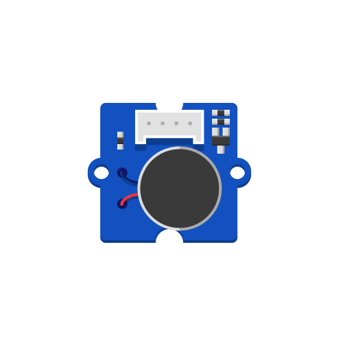

Creates vibration that can be used to generate patterns comparable to cell phone alarms.
Technical information on this component is available here.
The code example below treats the vibration motor like a digital component connected to pin D4, turning it on and off. That way, the motor can generate haptic feedback and alarms using the highest feedback intensity.
# --- Imports
import board
import time
import digitalio
# --- Variables
vibration_motor = digitalio.DigitalInOut(board.D4)
vibration_motor.direction = digitalio.Direction.OUTPUT
# --- Functions
# --- Setup
# --- Main loop
while True:
vibration_motor.value = True
time.sleep(0.5)
vibration_motor.value = False
time.sleep(0.5)
Instead of turning the vibration motor either entirely on or off, it can also create vibration at intermediate states. The example code below uses Pulse-Width Modulation (PWM) to ramp up the intensity of the motor in 64 steps between 0 (0%) and 65535 (100%).
# --- Imports
import time
import board
import pwmio
# --- Variables
vibration_motor = pwmio.PWMOut(board.D4)
# --- Functions
# --- Setup
# --- Main loop
while True:
# Count up from 0 to 65535, with 64 increment
for i in range(0, 65535, 64):
vibration_motor.duty_cycle = i
time.sleep(0.002)
To learn more about PWM signals, refer to the Piezo Buzzer example. Unlike the Piezo Buzzer example, a variable frequency is unnecessary for using the Vibration Motor.
This last example uses a function called vibration_alarm to simplify playing back alarm patterns. It takes three parameters: intensity, duration, and pause. intensity is the vibration motor’s intensity in percentage, duration is the time the motor will vibrate, and pause is the time the motor will be idle before the next vibration. In the main loop, the program iterates over each element of the alarm, activating the vibration motor with the corresponding intensity, duration, and pause. This allows you to use arrays to define vibration patterns instead of writing out the individual steps for vibration and pauses every time.
# --- Imports
import time
import board
import pwmio
# --- Variables
vibration_motor = pwmio.PWMOut(board.D4)
# --- Functions
def vibration_alarm(intensity, duration, pause):
vibration_motor.duty_cycle = intensity * 65535 // 100
time.sleep(duration) # Duration of vibration
vibration_motor.duty_cycle = 0 # Disable vibration
time.sleep(pause) # Pause after vibration
# --- Setup
alarm_1 = [
[100, 0.5, 0.5], [100, 0.5, 0.5], [100, 0.5, 0.5]
]
# --- Main loop
while True:
for note in alarm_1:
vibration_alarm(note[0], note[1], note[2])
time.sleep(2)
Here are two more alarm pattern examples:
alarm_2 = [
[100, 0.1, 0.1], [100, 0.1, 0.1], [100, 0.1, 0.1], [100, 0.5, 0.8], [100, 0.1, 0.1], [100, 0.1, 0.1], [100, 0.1, 0.1], [100, 0.5, 0.25]
]
alarm_3 = [
[100, 0.5, 0.2], [70, 0.1, 0.1], [70, 0.1, 0.3], [70, 0.1, 0.3], [100, 0.5, 0.3], [100, 0.5, 0.3], [100, 0.5, 0.3]
]